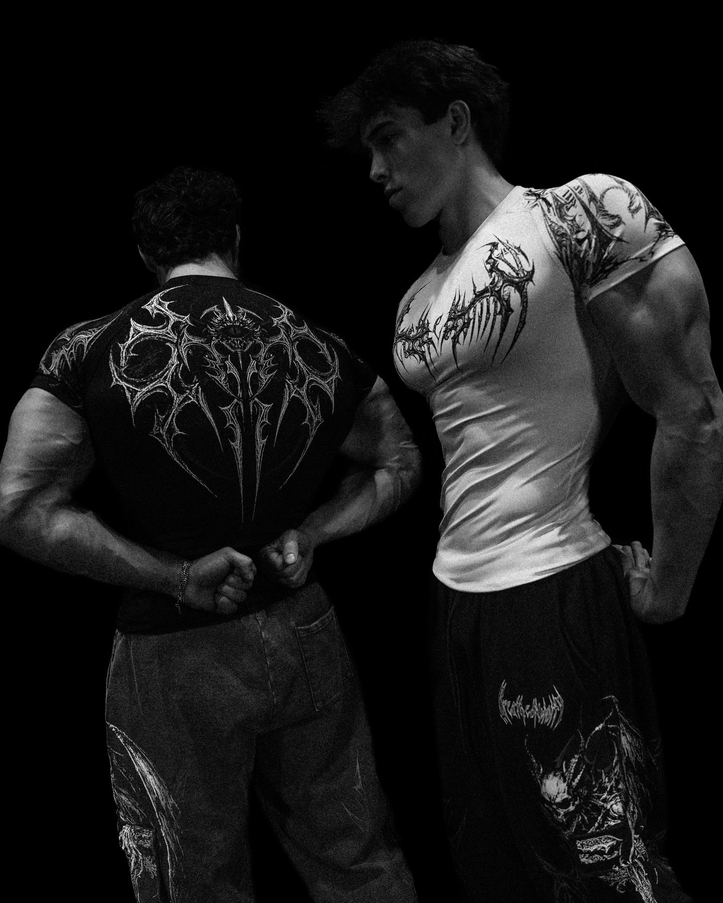
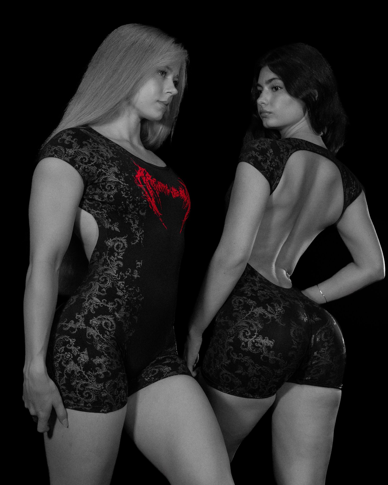

About

Our story
A sanctuary is where you go to be unbroken. Divinity is what you find when you stop asking permission.
SANCTUARY is built for the hours nobody watches. The early lift. The last set. The silence after the bar goes down. We make clothes for those hours, and for the people who keep showing up to them.
Most gym wear is loud about the wrong things. Slogans. Logos. Noise. We went the other way: black on black, cut close, printed with the iconography of cathedrals and iron. Quiet from a distance. Unforgettable up close.
The name
Sanctuary is a place of refuge. Divinity is the thing you reach for when you are tired of being ordinary. Put together, they describe the gym the way we see it: not a chore, not a trend, but a ritual you keep for yourself.
The lettering on our logo is thorned and gothic on purpose. It looks like it was carved into a cathedral door, because that is how it feels to walk into a room full of iron and decide you belong there.

The craft
Every piece starts as a drawing, then a pattern, then a prototype that has to survive real training before it earns a place in a drop. Heavyweight cotton fleece for hoodies and oversized shirts, so they hang with weight. High-stretch nylon blends for compression and bodysuits, so they move with you and stay put.
We use cut-and-sew construction and flat seams where the body moves most. The prints are thorned, ornate and detailed, because we believe a garment should reward a second look.
The drops
We do not run a catalogue. We release collections, one at a time, in limited quantities. Collection X is the current one. When the last piece of a collection sells, it is retired for good.
That is not a marketing line. It is how we keep every piece meaningful: no restocks, no sales, no second chances. If you are wearing it, you were early.
Questions
How do your sizes run?
Sizes go from XXS to XL. Hoodies and oversized shirts have a boxy, relaxed cut. Compression pieces are second-skin, so size up if you are between sizes.
Will sold-out drops come back?
No. Every drop is limited. Once it is gone, it never returns.
How much is shipping?
Shipping depends on weight and destination, and local tax or duty may apply. Prices can be viewed in your own currency using the region menu.
How should I care for the garments?
Cold wash inside out and hang dry. This keeps prints sharp and the fabric heavy.